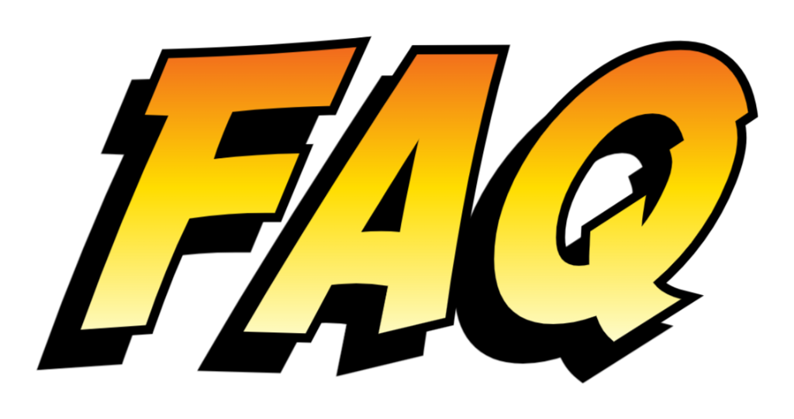

Q1: What is a Hackathon?
A: A Hackathon is an event spanning 1-2 days where participants can create projects in teams, attend workshops, and network with sponsors!
Q2: Who can participate?
A: All majors and genders are welcome! WECEHacks is open to students at the University of Illinois Urbana-Champaign.
Q3: Do I need to do anything prior to attending?
A: No; no experience is necessary. However, we recommend downloading VSCode, having a GitHub account, and having Git installed.
Q4: Does it cost money to attend?
A: No; all meals and snacks will be provided. Remember to bring laptops and chargers!
Q5: When and where will WECEHacks take place?
A: All events will take place in the Electrical & Computer Engineering Building on campus. Dates and room will be announced soon — check the schedule page for updates.
Q6: What if I don't have a team?
A: No worries! We will have a social event and Discord channel for creating teams! You can create projects in teams of 1-4, and participate in the CTF individually or in partners. A final team formation form will be sent closer to WECEHacks.
Q7: I have another question. Who do I contact?
A: Reach out to any member of our team, or message us on the WECE Discord!